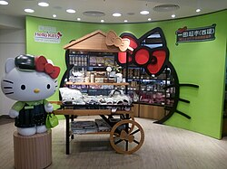

Hello Kitty (ハローキティ HarōKiti?)[1] es una marca y Personaje ficticio producido por la compañía japonesa Sanrio, uno de los más populares de esta compañía. Fue diseñada por Yuko Shimizu y el primer producto, se lanzó en Japón en 1974 y en los Estados Unidos en 1976.[2][3] Tras el primer diseño realizado por Shimizu, Yuko Yamaguchi se convirtió en la diseñadora oficial de Hello Kitty y lleva más de veinte años diseñando todo tipo de productos, accesorios y complementos de Hello Kitty. El personaje es una niña criada en los suburbios de Londres,[4][5][6] con un distintivo lazo rosa u otra decoración en su oreja izquierda. No tiene boca para que no exprese sentimientos y la persona que le vea refleje en ella su propio estado de ánimo. Según su historia de fondo, ella es una estudiante perpetua de 3.er grado que vive fuera de Londres.[7] En 1976, obtuvo derechos de autor y actualmente es una marca conocida internacionalmente. La línea de Hello Kitty genera unos 250 millones de euros anuales por la venta de licencias.[8] Existe un parque temático oficial propiedad de Sanrio, conocido como Sanrio Puroland. Tienda temática de Hello Kitty. Hello Kitty se vendió inmediatamente después de la puesta en marcha de 1974, y las ventas de Sanrio aumentaron siete veces hasta 1978. Se publican regularmente nuevas series de Hello Kitty en diferentes diseños temáticos, siguiendo las tendencias actuales. Yuko Yamaguchi, la diseñadora principal de la mayor parte de la historia de Hello Kitty, ha dicho que se inspira en la moda y el cine para la creación de nuevos diseños. Según Sanrio, en 1999 Hello Kitty apareció en 12 000 productos anuales diferentes. En 2008, Hello Kitty fue responsable de reso que tuvo Sanrio y hubo más de 50 000 productos diferentes de la marca Hello Kitty en más de 60 países. A partir de 2007, siguiendo las tendencias de Japón.
Página original